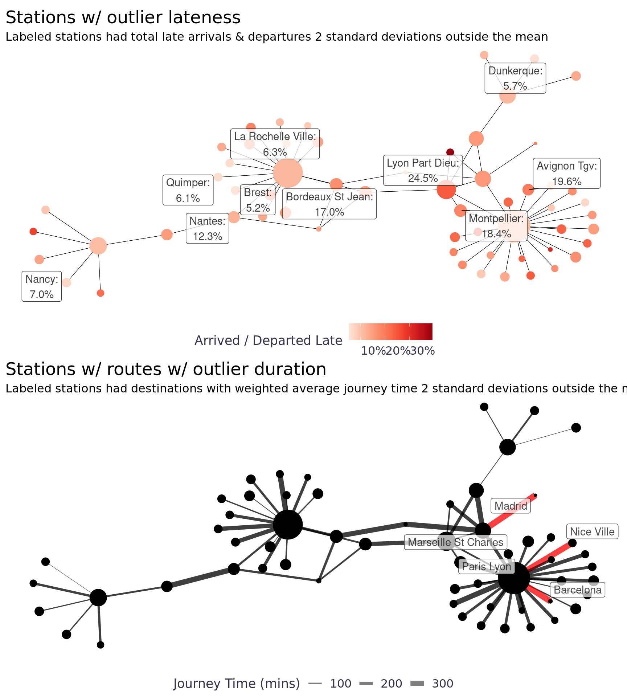
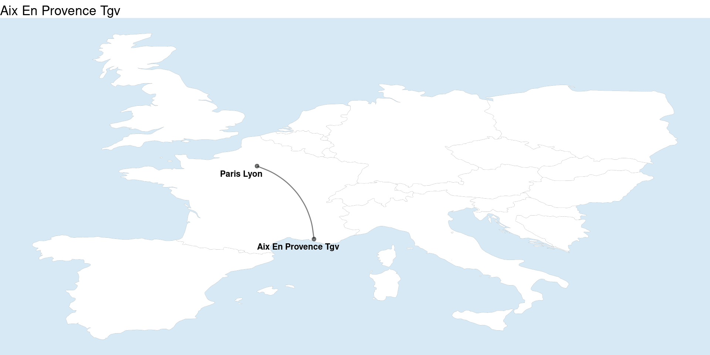

Background
French Trains Data
This Tidy Tuesday, I’m analyzing french trains data from TGV, France’s inter-city high-speed rail service. This is an older Tidy Tuesday data set, but it looks like a fun one and I’ve been wanting to spend some time learning a few networking packages. The TGV has been in operation since the 80’s and mostly goes throughout France, although a few legs are international. The TGV has data services that provide information about past train service with some documentation here. To download the data I use the tidytuesdayR package.
Code
knitr::opts_chunk$set(fig.width = 9)
library(knitr)
library(htmltools)
library(markUtils)
library(tidyverse)
library(scales)
library(janitor)
library(patchwork)
library(tidymodels)
library(glue)
library(ggforce)
library(tidygraph)
library(ggraph)
library(tweenr)
library(animation)
library(rlang)
library(wikifacts)
library(sf)
library(leaflet)
library(ggrepel)
library(sfnetworks)
library(measurements)
library(osmdata)
full_trains <- tidytuesdayR::tt_load('2019-02-26') |>
pluck('full_trains')
Downloading file 1 of 3: `full_trains.csv`
Downloading file 2 of 3: `regularite-mensuelle-tgv-aqst.csv`
Downloading file 3 of 3: `small_trains.csv`Analysis
We can summarize the data set with skimr, which provides a high-level understanding of the data. This data set has ~5.4k observations and 27 attributes. Most of the data is numeric and a number of columns start with num_ and avg_ which indicates that the data is aggregated. Most of the attributes have records for all observations (n_missing). The num_ fields are all counts so those should never be missing, meaning we can replace missing records with zero. The service attribute is missing 1.4k observations, but it’s a category of either national or international - should be easy to impute based on the departure_station and arrival_station. The 6 numeric attributes with names that start with delay_cause_ are all missing 3 percent of the observations. Rows missing delay_cause_ appear to be legs that had no delays. The comment_delays_on_arrival attribute is a comments field so it’s reasonable to have so many missing.
| Name | full_trains |
| Number of rows | 5462 |
| Number of columns | 27 |
| _______________________ | |
| Column type frequency: | |
| character | 4 |
| logical | 2 |
| numeric | 21 |
| ________________________ | |
| Group variables | None |
Variable type: character
| skim_variable | n_missing | complete_rate | min | max | empty | n_unique | whitespace |
|---|---|---|---|---|---|---|---|
| service | 1430 | 0.74 | 8 | 13 | 0 | 2 | 0 |
| departure_station | 0 | 1.00 | 4 | 30 | 0 | 59 | 0 |
| arrival_station | 0 | 1.00 | 4 | 30 | 0 | 59 | 0 |
| comment_delays_on_arrival | 3921 | 0.28 | 10 | 2678 | 0 | 681 | 0 |
Variable type: logical
| skim_variable | n_missing | complete_rate | mean | count |
|---|---|---|---|---|
| comment_cancellations | 5462 | 0 | NaN | : |
| comment_delays_at_departure | 5462 | 0 | NaN | : |
Variable type: numeric
| skim_variable | n_missing | complete_rate | mean | sd | p0 | p25 | p50 | p75 | p100 | hist |
|---|---|---|---|---|---|---|---|---|---|---|
| year | 0 | 1.00 | 2016.52 | 1.12 | 2015.00 | 2016.00 | 2017.00 | 2018.00 | 2018.00 | ▇▇▁▇▇ |
| month | 0 | 1.00 | 6.37 | 3.39 | 1.00 | 3.00 | 6.00 | 9.00 | 12.00 | ▇▅▅▅▇ |
| journey_time_avg | 0 | 1.00 | 165.39 | 78.94 | 45.96 | 100.77 | 160.84 | 205.70 | 481.00 | ▇▇▃▁▁ |
| total_num_trips | 0 | 1.00 | 281.07 | 155.09 | 6.00 | 181.00 | 238.00 | 390.00 | 878.00 | ▅▇▃▂▁ |
| num_of_canceled_trains | 0 | 1.00 | 7.74 | 23.65 | 0.00 | 0.00 | 1.00 | 4.00 | 279.00 | ▇▁▁▁▁ |
| num_late_at_departure | 0 | 1.00 | 41.58 | 50.99 | 0.00 | 10.00 | 23.00 | 51.75 | 451.00 | ▇▁▁▁▁ |
| avg_delay_late_at_departure | 0 | 1.00 | 16.81 | 8.80 | 0.00 | 11.98 | 15.84 | 20.28 | 173.57 | ▇▁▁▁▁ |
| avg_delay_all_departing | 0 | 1.00 | 2.54 | 3.97 | -4.47 | 0.90 | 1.78 | 3.24 | 173.57 | ▇▁▁▁▁ |
| num_arriving_late | 9 | 1.00 | 38.03 | 30.33 | 0.00 | 17.00 | 30.00 | 50.00 | 235.00 | ▇▂▁▁▁ |
| avg_delay_late_on_arrival | 9 | 1.00 | 32.45 | 13.63 | 0.00 | 23.81 | 30.76 | 38.77 | 258.00 | ▇▁▁▁▁ |
| avg_delay_all_arriving | 0 | 1.00 | 5.29 | 5.00 | -143.97 | 2.71 | 4.58 | 7.25 | 36.82 | ▁▁▁▁▇ |
| delay_cause_external_cause | 170 | 0.97 | 0.28 | 0.16 | 0.00 | 0.17 | 0.26 | 0.37 | 1.00 | ▆▇▂▁▁ |
| delay_cause_rail_infrastructure | 170 | 0.97 | 0.25 | 0.15 | 0.00 | 0.15 | 0.24 | 0.33 | 1.00 | ▇▇▂▁▁ |
| delay_cause_traffic_management | 170 | 0.97 | 0.18 | 0.14 | 0.00 | 0.08 | 0.16 | 0.26 | 1.00 | ▇▅▁▁▁ |
| delay_cause_rolling_stock | 170 | 0.97 | 0.18 | 0.13 | 0.00 | 0.09 | 0.16 | 0.24 | 1.00 | ▇▃▁▁▁ |
| delay_cause_station_management | 170 | 0.97 | 0.07 | 0.08 | 0.00 | 0.00 | 0.05 | 0.10 | 1.00 | ▇▁▁▁▁ |
| delay_cause_travelers | 170 | 0.97 | 0.04 | 0.05 | 0.00 | 0.00 | 0.02 | 0.06 | 0.67 | ▇▁▁▁▁ |
| num_greater_15_min_late | 5 | 1.00 | 26.09 | 21.48 | 0.00 | 11.00 | 20.00 | 35.00 | 192.00 | ▇▂▁▁▁ |
| avg_delay_late_greater_15_min | 5 | 1.00 | 28.98 | 18.87 | -118.02 | 8.99 | 31.53 | 41.00 | 258.00 | ▁▇▇▁▁ |
| num_greater_30_min_late | 5 | 1.00 | 11.65 | 10.41 | 0.00 | 4.00 | 9.00 | 16.00 | 91.00 | ▇▂▁▁▁ |
| num_greater_60_min_late | 5 | 1.00 | 4.20 | 4.68 | 0.00 | 1.00 | 3.00 | 6.00 | 36.00 | ▇▂▁▁▁ |
Based on the summary table, we can create a date field (year + month), format station names from all upper to normal sentence, create a leg attribute (departure station + arrival station), and impute the appropriate missing values.
Code
# Add date, get rid of all caps for stations, create leg column, fill in missing service records
service <- full_trains |>
select(service, arrival_station, departure_station) |>
group_by() |>
distinct() |>
filter(!is.na(service)) |>
ungroup()
trains <- full_trains |>
mutate(across(starts_with("num_"), ~replace_na(.x, 0))) |>
select(-service) |>
left_join(service) |>
mutate(
date = as.Date(sprintf("%d-%02d-01", year, month)),
departure_station = str_to_title(departure_station),
arrival_station = str_to_title(arrival_station),
leg = glue::glue("{departure_station} to {arrival_station}")) |>
mutate(service = if_else(
is.na(service),
case_when(str_detect(leg,"Madrid") ~ "International",
str_detect(leg, "Barcelona") ~ "International",
str_detect(leg, "Francfort") ~ "International",
str_detect(leg, "Stuttgart") ~ "International",
str_detect(leg, "Zurich") ~ "International",
str_detect(leg, "Geneve") ~ "Internationl",
T ~ "National"),
service)) |>
select(service, leg, date, everything())Total trips and late arrivals appear to have a linear relationship, which makes sense. There is an upward trend and significantly more variability from month to month than I would have expected. It appears there may have been a strike sometime in May or July of 2016 and it looks like there may be seasonality in the number of trips.
Code
trips <- trains |>
group_by(date) |>
summarise(trips = sum(total_num_trips)) |>
ungroup() |>
ggplot(aes(x = date, y = trips)) +
geom_line() +
geom_smooth(method = loess, se = T) +
scale_x_date(breaks = "9 months", date_labels = "%b-%Y") +
scale_y_continuous(labels = scales::number_format(accuracy = .1, scale = 1/1000, suffix = "K")) +
labs(y = "Trips", x = "Date", title = "Scheduled Trips", subtitle = "Overall service increased over the ~4 years") +
theme_blog()
late_arrivals <- trains |>
replace_na(list(num_arriving_late = 0)) |>
group_by(date) |>
summarise(late = sum(num_arriving_late)) |>
ungroup() |>
ggplot(aes(x = date, y = late)) +
geom_line() +
geom_smooth(method = loess, se = T) +
scale_x_date(breaks = "9 months", date_labels = "%b-%Y") +
scale_y_continuous(labels = scales::number_format(accuracy = .1, scale = 1/1000, suffix = "K")) +
labs(y = NULL, x = "Date", title = "Late Arrivals", subtitle = "Late arrivals increased with service") +
theme_blog()
# Put plots side by side with patchwork https://github.com/thomasp85/patchwork
trips + late_arrivalsTo get a better look of each leg we can plot the trips & late arrival data on heatmaps. Since the number of trips is not evenly distributed across the legs, it’s helpful to scale the data. We can use a log scale for the number of trips, but we can use a percentage for late arrivals since that’s easier to understand. A few legs had the majority of all trips (bright yellow) and a few of the legs didn’t start operating until January of 2018 (white). A legs had months where 40+ percent of all trips arrived late (e.g. June / July of 2018).
Code
service <- trains |>
group_by(departure_station, year, date) |>
summarise(trips = sum(total_num_trips, na.rm = F), .groups = "drop") |>
arrange(departure_station) |>
mutate(month = lubridate::month(date, label = T, abbr = T),
row = row_number()) |>
ggplot(aes(x = month, y = reorder(departure_station, -row), fill = trips)) +
geom_tile() +
scale_fill_viridis(labels = c("","Lowest","","","","","Highest",""), n.breaks = 7, trans = c("log")) +
scale_x_discrete(breaks = c("Jan","Apr","Jul","Oct")) +
facet_wrap(~year, nrow = 1, scales = "free_x") +
labs(y = "Departure Station",
x = NULL,
fill = "Trips",
title = "Trips by Month") +
theme_blog_facet(axis.text.x = element_text(size = 9, angle = 90, hjust = .5),
axis.text.y = element_text(size = 9),
panel.grid = element_blank(),
axis.ticks = element_blank(),
legend.text = element_text(size = 10),
legend.position="bottom",
legend.justification="center",
legend.direction="horizontal",
legend.key.width= unit(1, 'cm'))
late <- trains |>
group_by(departure_station, year, date) |>
summarise(late_arrivals = sum(num_arriving_late, na.rm = F),
trips = sum(total_num_trips, na.rm = F)) |>
ungroup() |>
mutate(pct_late_arrivals = late_arrivals / trips,
month = lubridate::month(date, label = T, abbr = T),
row = row_number()) |>
ggplot(aes(x = month, y = reorder(departure_station, -row), fill = pct_late_arrivals)) +
geom_tile() +
scale_x_discrete(breaks = c("Jan","Apr","Jul","Oct")) +
scale_fill_viridis(option = "magma", labels = scales::percent_format()) +
facet_wrap(~year, nrow = 1, scales = "free_x") +
labs(y = NULL,
x = NULL,
fill = NULL,
title = "Late Arrivals by Month") +
theme_blog_facet(axis.text.x = element_text(size = 9, angle = 90, hjust = .5),
axis.text.y = element_blank(),
panel.grid = element_blank(),
legend.text = element_text(size = 10),
legend.position="bottom",
legend.justification="center",
legend.direction="horizontal",
legend.key.width= unit(1, 'cm'))
service + late
Networking
No fear, I’m not talking about a cringy coffee date with a complete stranger, I’m talking about math networks (i.e. graphs). Viewing our data in a network will provide a lot of context we can’t get from other plotting methods. The tidygraph package makes it fairly easy to work with network graphs and the ggraph package provides ggplot2 with graphing grammar of graphics (wow that sounds confusing :joy:). These packages (and network analysis in general) are incredibly robust so there is a bit of a learning curve, I’ve noted some other materials I’ve found helpful getting started. 1

The short of it, tidygraph allows us to perform network analysis in data frames so we still take advantage of our the tidy workflow even though graph objects aren’t rectangular in nature. To create a graph object, we have to create a nodes list (points in the network) and an edges list (connections between nodes). We can store our nodes list as a data frame with a record for each node in the network, in this case train stations, and any attributes related to the nodes. We can store our edges list as a data frame with a record for each connection in the network, in this case legs, and any attributes related to the edges. All graph objects are either directed or un-directed - this graph is un-directed because the trains go in both directions so the edges do not represent a direction. Once we have a node list and edge list, we can transform the data frames into a tbl_graph.
Code
routes_df <- trains |>
mutate(total_journies_time = total_num_trips * journey_time_avg) |>
group_by(departure_station, arrival_station, leg, service) |>
summarise(
journey_time_weighted_avg = sum(total_journies_time, na.rm = T) / sum(total_num_trips, na.rm = T),
trips = sum(total_num_trips, na.rm = T),
late_departures = sum(num_late_at_departure, na.rm = T),
late_arrivals = sum(num_arriving_late, na.rm = T),
late_trips = sum(num_late_at_departure, na.rm = T) + sum(num_arriving_late, na.rm = T)
) |>
rename("from" = "departure_station", "to" = "arrival_station") |>
ungroup()
departures_df <- trains |>
group_by(departure_station) |>
summarise(
departures = sum(total_num_trips, na.rm = T),
late_departures = sum(num_late_at_departure, na.rm = T),
pct_late_departures = sum(num_late_at_departure, na.rm = T) / sum(total_num_trips, na.rm = T),
.groups = "drop") |>
rename("station"="departure_station") |>
mutate(id = row_number(), .before = 1)
arrivals_df <- trains |>
group_by(arrival_station) |>
summarise(
arrivals = sum(total_num_trips, na.rm = T),
late_arrivals = sum(num_arriving_late, na.rm = T),
pct_late_arrivals = sum(num_arriving_late, na.rm = T) / sum(total_num_trips, na.rm = T),
.groups = "drop") |>
rename("station"="arrival_station")
stations_df <- inner_join(departures_df, arrivals_df, by = c("station" = "station"))
routes_df <- routes_df |>
left_join(stations_df |> select(id, station), by = c("from" = "station")) |>
mutate(from = id) |>
select(-id) |>
left_join(stations_df |> select(id, station), by = c("to" = "station")) |>
mutate(to = id) |>
select(-id)
network_df <- tbl_graph(nodes = stations_df, edges = routes_df, directed = F)
With the tbl_graph, we can take advantage of ggraph to visualize our data. There is an autograph() function to quickly visualize your network automagically, but I’ll spell it out as well with ggraph(). Layout determines the position of the nodes and edges (more on that in a minute), we can start with layout='auto'. Then we use the typical ggplot flow but there are new geoms to pay attention to, primarily geom_node_point() and geom_edge_link(), these are very basic geoms to visualize the nodes and edges of the graph. Visualizing the data as a network has immediate benefits, this visual shows there are several major hubs that most legs connect through which wasn’t clearly discernible from our other plots.
Code
auto <- autograph(network_df) + labs(x = NULL, y = NULL, title = "Autograph") + theme_blog_network()
verbose <- network_df %N>%
ggraph(layout = 'auto') +
geom_edge_link(width = .15) +
geom_node_point(aes(linewidth = arrivals + departures), show.legend = F) +
scale_size(rang = c(1, 15)) +
labs(title = "Verbose", x = "", y = "", size = NULL) +
theme_blog_network()
auto + verboseRegarding layout, ggraph provides a number of layouts from igraph 2 and graphlayouts 3, with option to create your own. The ggraph function defaults to layout='auto', which seems to do a pretty good job selecting a layout in my novice experience, but it’s recommended that a layout is intentionally chosen for the graph. All the layout choices can be overwhelming, but it’s pretty easy to visually narrow down choices and then do a bit of research to understand the differences between those options. 4 Many of the algorithms are non-deterministic meaning you’ll get different results when re-running, which makes selecting the best layout all the more challenging. I saw a cool example by Thomas Lin Pederson where he showed the different layouts in a neat animation using tweenr. I tried that here, more for fun, to see the different layouts and mess with tweenr. I decided to go with layout='stress' because it seemed to produce the least overlap for both nodes and edges making it the easiest to read - funnily enough the same layout layout='auto' chose :joy:
Code
layout_names <- c('star', 'circle', 'gem', 'dh', 'graphopt', 'grid', 'mds', 'randomly', 'fr', 'kk', 'drl', 'lgl', 'stress')
layouts <- map(layout_names, function(x){
layout <- create_layout(x, graph = network_df) |> select(x, y, circular) |> mutate(layout_name = !!x)
})
n <- 5
n_frames <- length(layout_names) * n
layouts_tween <- tween_states(layouts, tweenlength = 1,
statelength = 1, ease = 'cubic-in-out',
nframes = n_frames)
title_transp <- tween_t(c(0, 1, 0), n, 'cubic-in-out')[[1]]
plots <- map(unique(layouts_tween$.frame), function(i){
tmp_layout <- layouts_tween[layouts_tween$.frame == i, ]
layout_name <- tmp_layout$layout_name[1]
title_alpha <- title_transp[i %% n + 1]
p <- ggraph(network_df, layout = tmp_layout) +
geom_edge_link(width = .15) +
geom_node_point(aes(size = arrivals + departures), show.legend = F) +
scale_size(rang = c(1, 15)) +
labs(title = paste0('Layout: ', layout_name), x = NULL, y = NULL) +
theme_blog_network() +
theme(plot.title = element_text(colour = alpha('black', title_alpha)))
return(p)
})
walk(plots, print)tbl_graph by activating the nodes or edges and using the verb of choice (e.g. mutate(), filter(), morph() etc.). The activate() function can be called directly or as pipeline operators %N>% and %E>%, which active nodes and edge respectively. I ran into some challenges in this post that I won’t spell out for brevity, but know functions like pivot_longer() and unnest() aren’t available with tbl_graph objects. I ended up writing a lot of clumsy code with pull(). There may be better approaches, but I wasn’t finding much on Stackoverflow or Github. I’ll post some questions later and link them in here if I can get some answers.
With dplyr verbs, we can calculate attributes on our nodes & edges to add to our visuals.
Code
l <- network_df %N>%
mutate(outlier = abs(scale(late_arrivals + late_departures) / scale(arrivals + departures)) >= 1.5) |>
mutate(node_label = ifelse(outlier, glue::glue("{station}:\n{scales::label_percent(accuracy = .1)((late_arrivals + late_departures) / (arrivals + departures))}"), NA_character_)) |>
ggraph(layout = 'stress') +
geom_edge_link(width = .15) +
geom_node_point(aes(size = arrivals + departures, color = (late_arrivals + late_departures) / (arrivals + departures))) +
geom_node_label(aes(label = node_label), alpha = .75, repel = T) +
scale_size(rang = c(1, 15), guide = NULL) +
scale_color_distiller(labels = scales::label_percent(), palette = "Reds", direction = 1) +
labs(title = "Stations w/ outlier lateness", subtitle = "Labeled stations had total late arrivals & departures 2 standard deviations outside the mean", x = "", y = "", color = "Arrived / Departed Late", size = NULL) +
theme_blog_network(legend.position = "bottom")
duration_outliers <- network_df %E>%
mutate(journey_time_z = scale(journey_time_weighted_avg)) |>
mutate(outlier = abs(scale(journey_time_weighted_avg)) >= 2) |>
filter(outlier == T)
duration_outliers <- unique(c(duration_outliers |> pull(from), duration_outliers |> pull(to)))
d <- network_df %E>%
mutate(outlier = abs(scale(journey_time_weighted_avg)) >= 2) %N>%
mutate(node_label = if_else(id %in% duration_outliers, station, NA_character_)) |>
ggraph(layout = 'stress') +
geom_edge_link(aes(edge_width = journey_time_weighted_avg, color = outlier), alpha = .5) +
scale_edge_width(range = c(.15, 3)) +
scale_edge_color_manual(values = c("TRUE" = "red", "FALSE" = "black"), guide = NULL) +
geom_node_point(aes(size = arrivals + departures)) +
geom_node_label(aes(label = node_label), alpha = .7, repel = T) +
scale_size(rang = c(1, 15), guide = NULL) +
labs(title = "Stations w/ routes w/ outlier duration", subtitle = "Labeled stations had destinations with weighted average journey time 2 standard deviations outside the mean", x = "", y = "", edge_width = "Journey Time (mins)") +
theme_blog_network(legend.position = "bottom")
l / d
Aside from the nice workflow, tidygraph also gives us access to a lot of new functionality and functionality from other network packages (other packages that are tougher to use with data frames imho) including centrality_* functions. There are a number of ways to measure centrality including betweenness, closeness, eigen, etc. Our network has pretty big hubs (i.e. Paris & Lyon Part Dieu) so the central nodes are pretty obvious, but often determining the central nodes is more difficult. Below we used betweenness to measure centrality, which measures the centrality of a node by how many times it is used to create the shortest path to other nodes in the network.
Code
cb <- network_df %N>%
mutate(cb = centrality_betweenness())
mean_cb <- mean(cb |> pull(cb))
sd_cb <- sd(cb |> pull(cb))
cb %N>%
mutate(node_label = if_else(cb >= mean_cb + sd_cb*2 , station, NA_character_)) |>
ggraph(layout = 'stress') +
geom_edge_link(width = .15) +
geom_node_point(aes(size = arrivals + departures, color = cb)) +
geom_node_label(aes(label = node_label), alpha = .75, repel = T) +
scale_size(range = c(1, 15), guide = NULL) +
scale_colour_steps(labels = NULL, low = "#d9d9d9", high = "#000000") +
labs(title = "Centrality Betweenness", x = "", y = "", color = "Centrality", size = NULL) +
theme_blog_network(legend.position = "bottom")I read a post by David Schoch that inspired me to compare different centrality measures. It seems like a good exploratory way to understand the network and to understand the best centrality measure(s) to use. The eigen measure was particularly interesting for this network, it looks for nodes that benefit from the connections of their nearest neighbors.
Code
centrality_df <- network_df %N>%
mutate(
cd = tidygraph::centrality_degree(),
cb = centrality_betweenness(),
cc = centrality_closeness(),
ce = centrality_eigen(),
cs = centrality_subgraph()
)
centrality_df <- tibble(
id = centrality_df |> pull(id),
station = centrality_df |> pull(station),
degree = centrality_df |> pull(cd),
betweenness = centrality_df |> pull(cb),
closeness = centrality_df |> pull(cc),
eigen = centrality_df |> pull(ce),
subgraph = centrality_df |> pull(cs)
)
is_top_n <- function(x, n){
top_n <- tail(sort(x), n)
x >= min(top_n)
}
centrality_df |>
mutate(across(.cols = c(degree, betweenness, closeness, eigen, subgraph), .fns = is_top_n, n = 3, .names = "{.col}_top_5")) |>
mutate(across(.cols = c(degree, betweenness, closeness, eigen, subgraph), .fns = ~abs(log10(.x)))) |>
filter(if_any(.cols = contains("_top_"), ~ . == T )) |>
select(-contains("_top_")) |>
pivot_longer(cols = c(degree, betweenness, closeness, eigen, subgraph), names_to = "measure", values_to = "value") |>
mutate(x_order = case_when(
measure == "betweenness" ~ 1,
measure == "closeness" ~ 2,
measure == "degree" ~ 3,
measure == "eigen" ~ 4,
measure == "subgraph" ~ 5
)) |>
ggplot() +
geom_col(aes(x = reorder(measure, -x_order), y = value, fill = station), position = "dodge") +
scale_fill_viridis_d() +
labs(title = "Centrality Measures", subtitle = "Comparing centrality measures for the stations in the top 5 (including ties)", fill = "Station", y = NULL, x = "Measure") +
theme_blog() +
theme(axis.text.y = element_blank())We can also use the group_* functions to perform community detection, for example group_edge_betweenness().
Code
group_edge_betweenness_plots <- function(tbl_graph, i){
# This feels very untidy, but names() does not work on tbl_graph objects and I can't find any way to use certain tidy
# methods (e.g. pivot_longer, map_dfc, etc.)
# pull() is the only programmatic way I can figure out to extract things from my df's once they're in the tbl_graph
cb_grps_df <- tbl_graph %N>%
mutate(grp_cols = list(paste0('grps_', as.character(i))))
for(n in i){
cb_grps_df <- cb_grps_df %N>%
mutate("{paste0('grps_', as.character(n))}" := forcats::as_factor(group_edge_betweenness(n_groups = n)))
}
plots <- purrr::map(i, function(n) {
net_df <- cb_grps_df %N>%
tidygraph::select(id:pct_late_arrivals, 9+n-1) |>
rename("group" = 9)
net_df |>
ggraph(layout = "stress") +
geom_edge_link0(width = 0.15) +
geom_node_point(aes(size = arrivals + departures, fill = group), show.legend = F) +
geom_mark_hull(
aes(x, y, group = group, fill = group, label = group),
concavity = 4,
expand = unit(2, "mm"),
alpha = 0.25
) +
scale_fill_brewer(palette = "Set1") +
labs(title = glue::glue("Groups: {n}"), x = NULL, y = NULL, fill = "Group") +
theme_blog_network()
})
}
network_df |>
group_edge_betweenness_plots(i = 2:6) |>
walk(print) Geospatial
After plotting our network and seeing Stuttgart on the left and Barcelona on the right, I really wanted to source coordinates and map the train network. The dataset didn’t come with coordinates, but I thought maybe I could source them - this was a total can of worms called Wikidata.
Wikidata
In trying to source coordinates for the 59 train stations I stumbled across wikifacts, an R package to query Wikidata. Wikidata is a structured data source for Wikipedia, Wikivoyage, Wiktionary, Wikisource, and the many other wiki projects. In other words, it’s a data base you can query to get info from Wikipedia. Who knew! I’m going to cover the basics of wikifacts in a separate post for posterity, but I used it to get coordinates for the stations so we could map the data.
It wasn’t quite as simple as a query and a join with the data because the names of the stations weren’t quite right in this data set (e.g. station Italie is not a station name). I had to do a little bit of Googling and make a few assumptions, but I think I got the wikidata item ID’s for all the stations. It’s a bit of a round about way to get the data, but it works.
Code
wikidata_ids <- tibble::tribble(
~station, ~wikidata,
"Aix En Provence Tgv", "Q800366",
"Angers Saint Laud", "Q952091",
"Angouleme", "Q3095646",
"Annecy", "Q2043382",
"Arras", "Q1990647",
"Avignon Tgv", "Q174845",
"Barcelona", "Q800453",
"Bellegarde (Ain)", "Q3095950",
"Besancon Franche Comte Tgv", "Q599069",
"Bordeaux St Jean", "Q800564",
"Brest", "Q2255490",
"Chambery Challes Les Eaux", "Q3096183",
"Dijon Ville", "Q3096374",
"Douai", "Q2228617",
"Dunkerque", "Q2474563",
"Francfort", "Q165368",
"Geneve", "Q800819",
"Grenoble", "Q2545346",
"Italie", "Q801193",
"La Rochelle Ville", "Q2762145",
"Lausanne", "Q669678",
"Laval", "Q3096443",
"Le Creusot Montceau Montchanin", "Q801071",
"Le Mans", "Q2718010",
"Lille", "Q801099",
"Lyon Part Dieu", "Q2008",
"Macon Loche", "Q2253062",
"Madrid", "Q23081",
"Marne La Vallee", "Q801167",
"Marseille St Charles", "Q371217",
"Metz", "Q801179",
"Montpellier", "Q801197",
"Mulhouse Ville", "Q801205",
"Nancy", "Q2178663",
"Nantes", "Q2180175",
"Nice Ville", "Q738970",
"Nimes", "Q2360563",
"Paris Est", "Q757180",
"Paris Lyon", "Q747541",
"Paris Montparnasse", "Q631114",
"Paris Nord", "Q745942",
"Paris Vaugirard", "Q631114",
"Perpignan", "Q2283118",
"Poitiers", "Q2786522",
"Quimper", "Q2191696",
"Reims", "Q801356",
"Rennes", "Q1866058",
"Saint Etienne Chateaucreux", "Q2486002",
"St Malo", "Q2623224",
"St Pierre Des Corps", "Q3097610",
"Strasbourg", "Q801473",
"Stuttgart", "Q613766",
"Toulon", "Q2683553",
"Toulouse Matabiau", "Q373449",
"Tourcoing", "Q2598042",
"Tours", "Q1876295",
"Valence Alixan Tgv", "Q2052261",
"Vannes", "Q1867341",
"Zurich", "Q224494"
)
all_tgv_stations_wikidata <- '
SELECT ?name ?nameLabel ?nameDescription ?coords
WHERE
{
{?name wdt:P1192 wd:Q129337}
UNION
{?name wdt:P1192 wd:Q675756}
UNION
{?name wdt:P1192 wd:Q847141}
UNION
{?name wdt:P127 wd:Q358752}
OPTIONAL {?name wdt:P625 ?coords.}
SERVICE wikibase:label { bd:serviceParam wikibase:language "en". }
}
' |>
wiki_query() |>
mutate(wikidata = str_split(name, "entity/")) |>
mutate(wikidata = map_chr(wikidata, 2)) |>
distinct()sf
Not the city, the R package sf. It stands for simple features, a set of standards that specify a common storage and access model of geographic feature made of mostly two-dimensional geometries. [^5] The sf package is the tidygraph of geospatial analytics in R (or vice versa, I think sf might be older).

We can work with many geometries sf. Most of my experience has been with points and polygons, but given all the time we just spent working tidygraph, we should convert the edges to linestrings. This was my first time working with linestrings and I had a little trouble, but this great answer from lovalery got me through it.
Code
extract_lonlat <- function(point, lon_or_lat = c("lon", "lat)")){
args <- c("lon", "lat")
lon_or_lat <- match.arg(lon_or_lat, choices = args)
index <- which(args == lon_or_lat, arr.ind = F)
x <- str_split_fixed(str_remove(str_remove(point, pattern = "Point\\("), pattern = "\\)"), n = 2, " ")[index]
return(x)
}
stations_sf <- stations_df |>
left_join(wikidata_ids, by = c("station" = "station")) |>
left_join(all_tgv_stations_wikidata, by = c("wikidata" = "wikidata")) |>
rowwise() |>
mutate(
lon = as.numeric(extract_lonlat(coords, "lon")),
lat = as.numeric(extract_lonlat(coords, "lat"))
) |>
ungroup() |>
st_as_sf(wkt = "coords", remove = T) |>
st_set_crs(4326)
routes_sf <- map2_dfr(routes_df$from, routes_df$to, function(from, to) {
from_stations_sf <- stations_sf |> filter(id == from)
to_stations_sf <- stations_sf |> filter(id == to)
from_coords <- stations_sf |> filter(id == from) |> select(coords)
to_coords <- stations_sf |> filter(id == to) |> select(coords)
geometry <- st_cast(st_union(from_coords,to_coords), "LINESTRING")
df <- tibble(
from = from,
to = to,
from_lon = from_stations_sf$lon,
from_lat = from_stations_sf$lat,
to_lon = to_stations_sf$lon,
to_lat = to_stations_sf$lat,
geometry = geometry$coords
)
return(df)
}) |>
st_as_sf() |>
st_set_crs(4326)Creating a map with sf and leaflet is so easy, it’s amazing! We can pass the points and the linestrings or just the points since the routes get really crowded unless we filter to one station maybe… This could be a good idea to build an accompanying table to filter the leaflet nodes to specific stations and all their connections. I’m going to skip that idea for now because I’ve done that before in with plotly and crosstalk in my Great American Beer Festival post, but I might do it in a separate post later. Note, I had a small hiccup getting the map background to load on my computer that was solved with this answer from Wilcar.
Code
My first thought to look at the linestrings was to use geom_sf to make an arc diagram - I weirdly couldn’t figure out an easy way to do it with sf at first so I just used based ggplot2 and the old fashioned latitude / longitude approach with help from a post by Markus Konrad. This was actually a lot easier than I thought it’d be.
Code
geom_map <- borders("world", ylim = c(38, 52), xlim = c(-4.5, 18), size = .04,
fill = "white")
plots <- map(stations_sf$id, function(x){
station <- stations_sf |> filter(id == x) |> pull(station)
e <- routes_sf |>
filter(from == x)
n <- stations_sf |>
filter(id %in% e$from | id %in% e$to)
ggplot(n) +
geom_map +
geom_point(aes(x = lon, y = lat),
shape = 21, alpha = .5, stroke = 0.5, fill = "black", color = "black") +
geom_text_repel(aes(x = lon, y = lat, label = station),
size = 3, color = "black", fontface = "bold") +
geom_curve(data = e, aes(x = from_lon, y = from_lat, xend = to_lon, yend = to_lat),
curvature = 0.33,
alpha = 0.5,
color = "black") +
#coord_cartesian(ylim = c(38, 52), xlim = c(-4.5, 18)) +
labs(title = station, x = NULL, y = NULL) +
theme_void() +
theme(panel.background=element_rect(fill="#d7e9f5", colour="#d7e9f5"))
})
walk(plots, print) 
I finally got the map above using sf by leveraging another package, sfnetworks, which combines sf and tidygraphs. This package is the perfect way to tie our two different threads of network and spatial analysis together.
Code
network_sf <- sfnetwork(stations_sf, routes_df, node_key = "id", directed = F)
network_sf <- tidygraph::convert(
network_sf,
to_spatial_explicit,
.clean = TRUE
)
ggplot() +
geom_map +
geom_sf(data = st_as_sf(network_sf, "edges"), color = "black") +
geom_sf(data = st_as_sf(network_sf, "nodes"), color = "black") +
theme_void() +
theme(panel.background=element_rect(fill="#d7e9f5", colour="#d7e9f5"))It also provides some really handy functionality like measuring edge length (i.e. distance) because it has both the graph data and the sf data. We can use that for all sorts of analysis including calculating the average speed of the routes (since we already have weighted average trip time), very cool!
Code
network_sf <- network_sf %E>%
mutate(distance = edge_length()) |>
mutate(distance_km = as.numeric(sub("\\s+\\D+$", "", measurements::conv_unit(distance, from = "m", to = "km")))) |>
mutate(avg_speed_kph = distance_km / (journey_time_weighted_avg / 60))
ggplot() +
geom_map +
geom_sf(data = st_as_sf(network_sf, "edges"), aes(color = avg_speed_kph)) +
geom_sf(data = st_as_sf(network_sf, "nodes"), color = "black") +
labs(title = "Route Speeds (kph)", color = "Avg kph") +
theme_void() +
theme(panel.background=element_rect(fill="#d7e9f5", colour="#d7e9f5"),
legend.position = "bottom")Finally, heavily borrowing from the package vignette, sfnetworks can use tidygraphs morphers to do really neat things like community detection in edges. Here we morph the edges into the nodes place so that we can use Louvain community detection, which can only be done on nodes, and then assign those groups to the edges so we can visualize them.
Code
grouped_net = network_sf %N>%
morph(to_linegraph) |>
mutate(group = group_louvain()) |>
unmorph()
grouped_net <- grouped_net |>
activate("edges") %E>%
st_as_sf() |>
transmute(group = as.factor(group))
ggplot() +
geom_map +
geom_sf(data = st_as_sf(grouped_net, "edges"), aes(color = group)) +
geom_sf(data = st_as_sf(network_sf, "nodes"), color = "black") +
labs(title = "Louvain method for community detection", color = "Groups") +
theme_void() +
theme(panel.background=element_rect(fill="#d7e9f5", colour="#d7e9f5"),
legend.position = "bottom")Wrap Up
I really wanted to get more experience with some of the network analysis packages in R - mission accomplished. This exercise morphed into a little bit more of a package demo than pure analysis, but I feel like I learned a lot of new tools / techniques that I’ll be able to leverage in the future. There’s still a lot more to learn with tidygraph, sf, and sfnetworks, but I feel like this gave a solid foundation. Hopefully others find it useful as well!
Footnotes
Network analysis is huge area in analytics. Below are a few resources I’ve found helpful: Introducing tidygraph, tidygraph 1.1, A Tidy Hope, 1 giraffe, 2 giraffe, GO!, Network Analysis with R by Jesse Sadler, tidygraph & ggraph by Michael Taylor, Network analysis & visualization with R & igraph↩︎
The igraph Manual, Ch. 20 Generating layouts for graph drawing, provides detailed explanations, parameters, etc. for all the igraph layouts. The ggraph layout names match the
igraph::layout_with_*function names.↩︎The graphlayouts Package provides provides detailed explanations, parameters, etc. for all the graphlayout functions.↩︎
Introduction to layouts by Thomas Lin Pederson was a simple primer on layouts, Metwork Analysis: Layout of Nodes by Robert Wiederstein covered a bit more using igraph, and Stress based graph layouts by David Schoch provided additional insights. [5^]: Simple features Wikipedia page↩︎